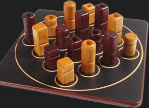

Quarto

Es gibt 16 verschiedene Spielfiguren mit jeweils vier Merkmalen: gelb oder braun, rund oder quadratisch, gross oder klein, mit oder ohne Loch.
Ziel des Spiels: Vier Figuren mit mindestens einem gleichen Merkmal in eine Reihe (waagrecht, senkrecht oder diagonal) auf das Brett stellen. (Quarto!)
Der erste Spieler wählt eine der 16 Figuren und gibt sie seinem Spielgegner. Dieser stellt die Figur auf eines der Spielfelder, wählt dann eine der 15 verbliebenen Figuren und gibt die seinem Gegner. Dieser stellt die Figur auf eines der freien Felder usw.
Ich empfehle Ihnen für das Spielen von Quarto (Javascript-Variante) die folgende Webseite. Die Seite wird in einem neuen Fenster geöffnet.
Quarto auf bernhard-gaul.de online spielen
©1997 - 2026 www.mathematik.ch |🔍